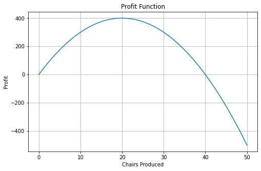
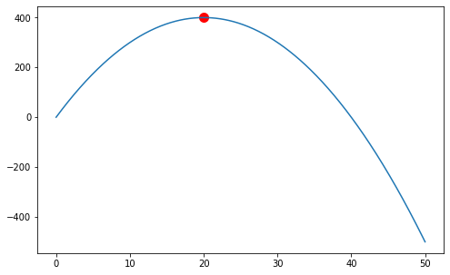
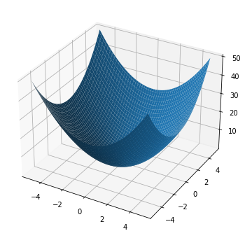
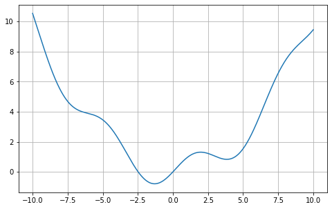

scipy Optimization#
Today we will get an introduction to optimization. Optimization is concerned with finding the best solution to a problem. For example, finding the shortest driving route or maximizing profit.
Every optimization problem has three components:
Variables
Objective function
Constraints (optional)
import numpy as np
import matplotlib.pyplot as plt
Motivating Example#
Suppose a company makes chairs. For \(x\) amount of chairs, profit is given by $\(P(x)=40x-x^2\)$ The question is how many chairs gives the most profit?
x = np.linspace(0,50,500)
profit = 40*x - x**2
plt.figure(figsize=(8,5))
plt.plot(x,profit)
plt.xlabel("Chairs Produced")
plt.ylabel("Profit")
plt.title("Profit Function")
plt.grid()
plt.show()

The graph reaches its highest point around \(x=20\) But we can compute this:
from scipy.optimize import minimize
The minimize function will find the minimum. To maximize, we minimize the negative:
def objective(x):
return -(40*x - x**2)
result = minimize(objective, x0=10)
print(result.x)
[20.00000039]
best_x = result.x[0] # x value that obtains max
maximum_profit = -objective(best_x) # max
print(best_x)
print(maximum_profit)
20.000000385058065
399.9999999999998
plt.figure(figsize=(8,5))
plt.plot(x,profit)
plt.scatter(best_x,
maximum_profit,
color="red",
s=100)
plt.show()

Optimization with Two Variables#
Suppose
from mpl_toolkits.mplot3d import Axes3D
x = np.linspace(-5,5,100)
y = np.linspace(-5,5,100)
X,Y = np.meshgrid(x,y)
Z = X**2 + Y**2
fig = plt.figure(figsize=(8,6))
ax = fig.add_subplot(111, projection="3d")
ax.plot_surface(X,Y,Z)
plt.show()

The minimum appears to occur at \((0,0)\). We can compute:
def f(v):
x = v[0]
y = v[1]
return x**2 + y**2
result = minimize(f,
[2,2])
print(result.x)
[-4.75820003e-08 -4.75820001e-08]
Bounded Optimization#
We can also include bounds for our variables
def f(x):
return -(40*x - x**2)
result = minimize(
f,
x0=10,
bounds=[(0,30)]
)
best_x = result.x[0]
best_profit = 40*best_x - best_x**2
print("Best production =", best_x)
print("Maximum profit =", best_profit)
Best production = 19.99999732853481
Maximum profit = 399.9999999999929
Multiple Local Minima#
Some functions have several minima, so be careful.
def g(x):
return np.sin(x)+0.1*x**2
x = np.linspace(-10,10,500)
plt.figure(figsize=(8,5))
plt.plot(x,g(x))
plt.grid()
plt.show()

result1 = minimize(g,-8)
result2 = minimize(g,8)
print(result1.x)
print(result2.x)
[-1.30644013]
[3.8374632]
Lab Problems#
Suppose \(f(x)=x^2+6x+10\)
a. Plot the function to visualize the minimum
b. Find the minimum using scipy
Find the maximum of \(50x-x^2\).
Minimize
np.sin(x)+x**2
using different starting values.
Do you obtain the same solution? Compute the derivative using sympy. When is this derivative zero?
Design a function with multiple minima and optimize.